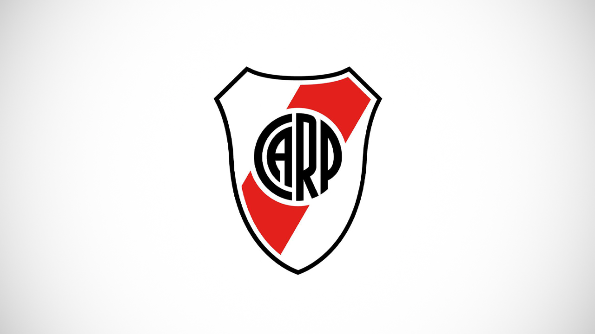
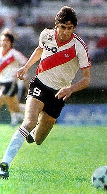

Actividades
1.1- ¿Para qué sirve la etiqueta ul? Dar un ejemplo en donde lo utilizarías.
La etiqueta <Ul></Ul> sirve para generar una lista con viñetas.
La utilizaria en una lista de supermercado.
1.2- ¿Para qué sirve la etiqueta ol? Dar un ejemplo en donde lo utilizarías.
La etiqueta <Ol></Ol> sirve para hacer un listado con numeración alfabetica.
la utilizaria en una tabla de posiciones
1.3- ¿Para qué sirve la etiqueta dl? Dar un ejemplo en donde lo utilizarías.
La etiqueta <dl></dl> se utiliza para representar una lista descriptiva.
Lo utilizaria para presentar personajes de un cuento o novela.
1.4- ¿Para qué sirve la etiqueta li? Dar un ejemplo en donde lo utilizarías
La etiqueta <li></li> genera una lista que declara cada uno de los elementos de una lista.
La utilizaria para una lista que no necesite un orden especifico.
1.5- Crea una lista desordenada con tres elementos (li) que contengan nombres de países de América del Sur.
- Argentina
- Brasil
- Chile
1.6- Crea una lista ordenada con cinco elementos (li) que contengan los días de la semana en orden alfabético.
- Lunes
- Martes
- Miércoles
- Jueves
- Viernes
1.7- Anida una lista desordenada dentro de otro elemento li de otra lista desordenada
para crear una lista anidada de frutas y verduras.
1.8- Crea una lista ordenada, respetando las negritas y el subrayado,
que contenga los siguientes pasos para hacer una tarta de manzana:
a) Pelar y cortar las manzanas en rodajas finas.
b) Mezclar la canela, el azúcar y la harina en un tazón.
c) Colocar la masa de la tarta en un molde para horno.
d) Colocar las manzanas sobre la masa de la tarta. e) Hornear la tarta durante 45 minutos.
- Pasos para hacer una torta de manzana:
- Pelar y cortar las manzanas en rodajas finas.
- Mezclar la canela, el azúcar y la harina en un tazón.
- Colocar la masa de la tarta en un molde para horno.
- Colocar las manzanas sobre la masa de la tarta.
- Hornear la tarta durante 45 minutos.
1.9- Existe un atributo que se aplica a la etiqueta ol para ver la lista en orden descendente
en vez de ascendente, ¿cuál es ese atributo? Utilizar la referencia de atributos
de HTML https://developer.mozilla.org/es/docs/Web/HTML/Attributes
El atributo que se utiliza en la etiqueta <ol> para ver la lista en orden descendente
en vez de ascendente es el "reversed"
1.10- Utilizando el atributo anterior, crear una lista
con cuatro elementos que contengan nombres de películas de terror de forma descendente.
- Chucky
- El conjuro
- It
- La monja
1.11- Elegir un gusto particular y realizar una lista descriptiva de por lo menos 5 elementos.
El título debe tener un enlace que lleve a un sitio de referencia.
Utilizar en las descripciones etiquetas: strong, em, img.

- Club Atlético River Plate
- El Club Atlético River Plate es un entidad polideportiva de Argentina.
Fue fundado el 25 de mayo de 1901 en el barrio de La Boca, tras la fusión de los clubes Santa Rosa
y La
Rosales,
y su nombre proviene de la antigua denominación que se le daba en el inglés británico al Río de la Plata.
Su principal actividad es el fútbol masculino profesional, el cual participa en la Primera División de
Argentina.
Disputa sus partidos en el estadio Monumental, el de mayor capacidad en Sudamérica; y el segundo en el
continente con una capacidad para 84 567 espectadores.
- Lionel Andres Messi
Cuccittini
- Lionel Andrés Messi Cuccittini, conocido como Leo Messi, es un futbolista argentino
que juega como delantero o centrocampista.
Desde 2023, integra el plantel del Inter Miami de la MLS canadoestadounidense.
Es también internacional con la selección de Argentina, de la que es capitán

- Cole Palmer
- Cole Jermaine Palmer es un futbolista británico
que juega como centrocampista en el Chelsea F. C.
de la Premier League de Inglaterra.
- Nemzzz
- Nemiah Emmanuel Simms, conocido profesionalmente como Nemzzz,
es un rapero británico de Manchester. Obtuvo reconocimiento en 2021 con los temas "Elevate" y "2MS".
Lanzó su primer mixtape Do Not Disturb en 2024, que debutó en el puesto 17 en la lista de álbumes del Reino
Unido

- Enzo Francescoli
- Enzo Francescoli Uriarte (Montevideo, 12 de noviembre de 1961) es un exfutbolista uruguayo.
Es conocido por el apodo de príncipe, por su estilo clásico y elegante.Es el único uruguayo incluido por
Pelé en la FIFA 100,
y fue elegido por la Federación Internacional de Historia y Estadísticas del Fútbol como el sexto jugador
más grande de su país y el 24.º
de América del Sur en el siglo XX